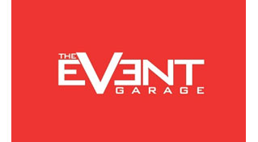
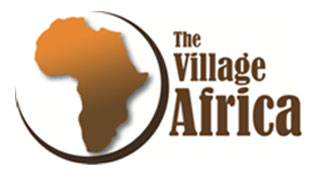
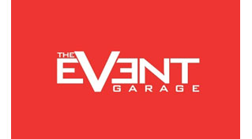
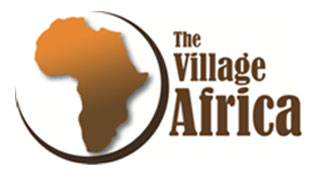

Who we are?
KEY GOALS
Lower the risk of Non-Communicable Diseases/cardiovascular diseases (like heart attack and stroke), overweight/obesity, diabetes, musculoskeletal problems, chronic respiratory diseases (such as chronic obstructive pulmonary disease, asthma) and some cancers.
Health education on tobacco, alcohol and drug abuse prevention, personal hygiene, preventive health, common communicable and chronic diseases.
Healthy diets and good nutrition.
Contribute to improved academic performance, attendance rates, behavior and lifelong health and well-being.
To strengthen their immunity, build their self-esteem, reduce symptoms of depression and improve social behavior and learning.
Building relationships and a sense of community.
Wellness for Greatness Kenya is a health and fitness organization founded to run the Transforming Ordinary into Extraordinary wellness program.
The Program strives to inculcate Fitness into the daily lives of the school youth, adults and community. We believe that our lives should be a journey into keeping ourselves healthy, fit and able-bodied through our progressive years.
OUR VISION
A preferred public health and wellness service provider, delivering extraordinary value oriented and first-class satisfaction to the Kenyan population.
Our Mission
To promote Public Health through physical activity, physical education, healthy diets as well as Provide cutting edge physical health and fitness services by encouraging positive behavioral change to improve the lives and wellbeing of the Kenyan public from a tender age
Our Partners and Sponsers
 



Focus to support
We Focus To Support & Address
-
WORLD HEALTH ORGANIZATION
It encourages physical activity in children and youth and support programs aimed at preventing and controlling Non-Communicable diseases through focusing on reducing the risk factors associated with these diseases.
-
THE COMPETENCY BASED CURRICULUM
Through the curriculum Physical Education and Community Service Learning will be compulsory for all learners. The curriculum confirms that the country is struggling with social ills, especially among the youth, like drugs and substance abuse, lifestyle diseases, preventive health and chronic diseases.
-
NATIONAL SCHOOL HEALTH POLICY
Expects schools to instill the value of physical and sporting activities through integration of physical activity in the curriculum; establishing adequate, safe and suitable physical education facilities; allocating time for physical activities; making sporting and recreation activities accessible to all children, including those with disabilities. Enhance knowledge and sensitize school communities on prevention and control of Non-Communicable diseases.
-
THE NATIONAL PHYSICAL ACTIVITY ACTION PLAN
2018-2023
The action plan Targets by 2023 to have reduced the levels of insufficient physical activity by 5%. The vision is ‘’A physically active and healthy nation.” Mission “To improve health and well-being and reduce health inequalities in Kenya through a diverse and inclusive provision of physical activity opportunities to enable more people to be more active, more often”. The action plan’s goals are: To increase and maintain adequate levels of health enhancing physical activity for all persons and To contribute to the prevention, management and control of chronic non-communicable diseases.
-
THE KENYA HEALTH POLICY 2012-2030
That aims at attaining the highest possible standard of health in a manner responsive to the health needs of the population. This policy will be achieved through strategic objectives which include halting and reversing the rising burden of NCD’s, minimizing exposure to health risk factors, eliminating communicable diseases and strengthening collaboration with health related sectors which have a bearing on NCD prevention and control
-
FAO FOOD-BASED DIETARY GUIDELINES – KENYA
The guideline has messages for healthy eating and is suitable for professionals who educate others on nutrition for optimal health (nutritionists, health practitioners, teachers at institutions, including colleges and technical training institutes, community educators, and agricultural extension workers).
-
THE MINISTRY OF HEALTH
Kenya National Strategy for the Prevention and Control of Non-Communicable Diseases 2015-2020 recognizes many risk factors related to Inadequate Physical Activity.
Kenya National Strategy for the Prevention and Control of Non-Communicable Diseases 2015-2020 recognizes many risk factors related to Inadequate Physical Activity.
-
SUSTAINABLE DEVELOPMENT GOALS
Goal No. 3 on Ensuring healthy lives and promote wellbeing for all at all ages. By 2030 reduce by one third premature mortality from non-communicable diseases through prevention.
-
NATIONAL SCHOOL MEALS AND NUTRITION STRATEGY
2017-2022
It is based on the commitment of the Government of Kenya to ensure that school children are well nourished and healthy. It acknowledges nutrition and nutrition education as core components of school meals.
THE NATIONAL YOUTH POLICY
Support youth development, health, nutrition and wellbeing with the new challenges like malnutrition, Non-Communicable diseases, drug abuse, mental health, depression, anxiety, eating disorders, stress, reduce risks of illness and nature positive interactions.